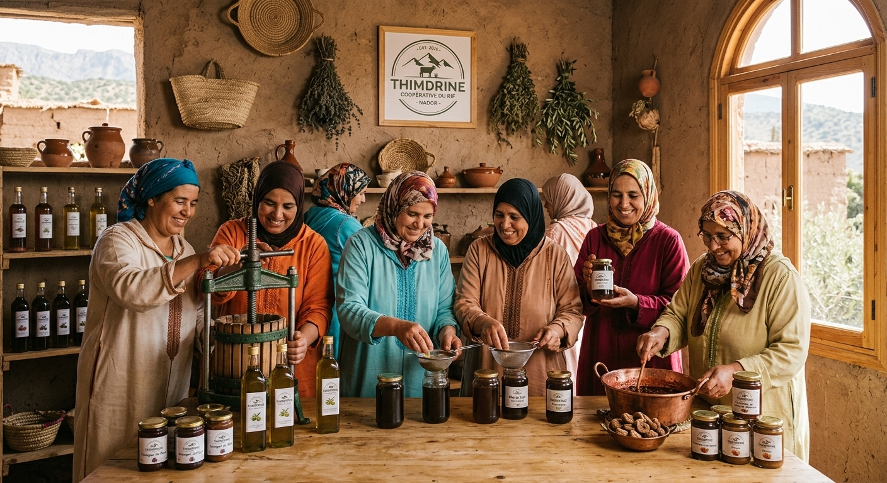

Depuis 2015, Thimdrine réunit des femmes de la région de Nador pour faire vivre les saveurs et les savoir-faire du Rif.
Créée en 2015 dans la région de Nador, la coopérative Thimdrine réunit 25 femmes qui récoltent, transforment et conditionnent elles-mêmes leurs produits.
Nos ruches sont installées dans les collines de thym sauvage du Rif, nos oliviers poussent sur les terrasses familiales et nos figues de barbarie sont cueillies à la main chaque été.
25 femmes réunies autour d’un travail commun, de la récolte au conditionnement.
Des produits récoltés et préparés par les femmes de la coopérative, avec soin.
Du thym sauvage, des oliviers et des figues de barbarie : les saveurs du Rif, sans additifs.
Mme Fadma souhaite faire connaître la coopérative, ses produits et ses valeurs à travers ce site vitrine. Déjà présents sur les marchés et via WhatsApp, nous vous accueillons ici pour recevoir vos demandes de commande.
Miel de thym, huile d’olive et confiture de figue de barbarie : découvrez nos produits ou contactez la coopérative pour une demande de commande.